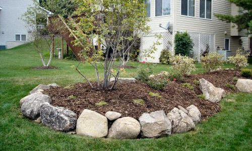
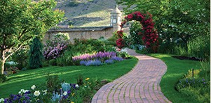
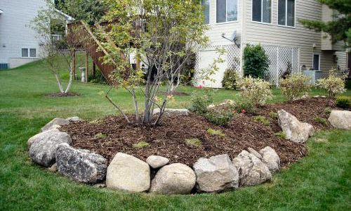
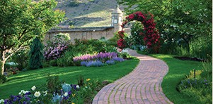

City Gardens & Landscaping started business in 2005 by founder Mr. Joe Boxelder. We started from humble beginnings, running two landscaping crews, and operating a small retail nursery. As the City of DesMoines grew, so did we.
Our Staff
Joe Boxelder
Over the years, City Gardens & Landscaping has tripled both in size, and in products offered. We've been under the same name and ownership for over 10 years. City Gardens & Landscaping now employees 30-40 employees, and carries the largest selection of plant materials in the area. We have strong ties to the local community, and have decades of landscape history and community service work here.

  
 
 Joe Boxelder
Joe Boxelder